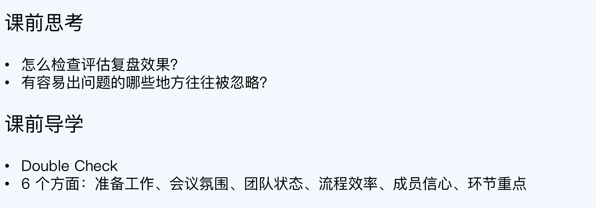
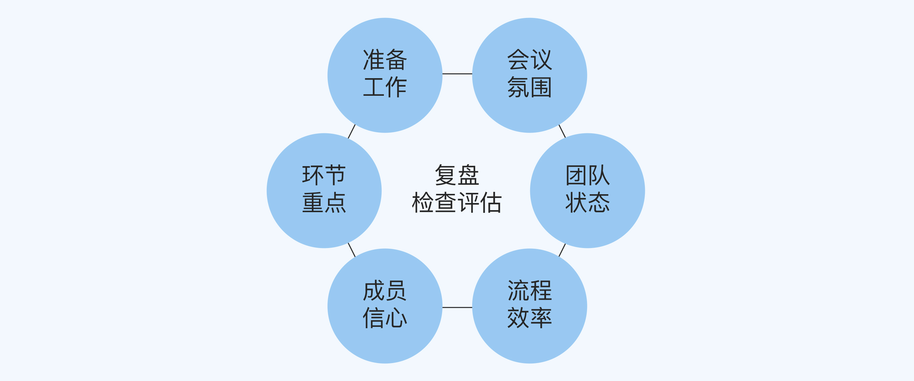
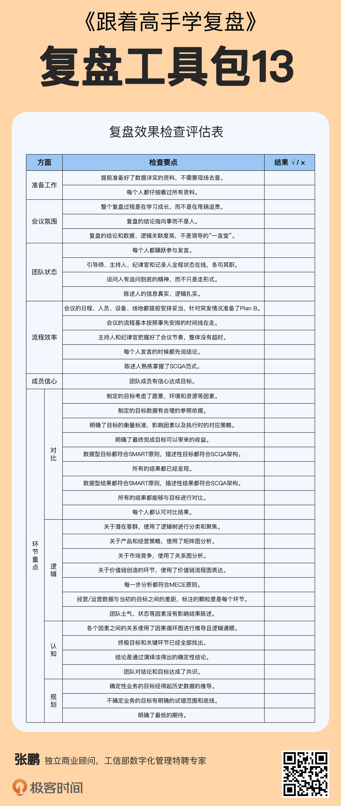

- 00 开篇词 为什么每个人都应该学会复盘？.md.html
- 01 CLAP模型：一个优秀的复盘模型是什么样的？.md.html
- 02 OPTM框架：怎么使用CLAP模型？.md.html
- 03 教练技术：怎么做复盘才能化解冲突？.md.html
- 04 制度和文化：怎么营造复盘环境？.md.html
- 05 三角法：怎么组建复盘团队？.md.html
- 06 MECE原则：怎么准备复盘资料？.md.html
- 07 五步法：如何召开一次高效的复盘会议？.md.html
- 08 事实比较：如何快速比较目标与结果？.md.html
- 09 分析原因：梳理逻辑时怎样找到切入点？.md.html
- 10 洞察规律：怎样更新认知才能找准发力点？.md.html
- 11 OKR：怎样根据复盘结论制定计划？.md.html
- 12 Double Check：怎么检查评估一次复盘的效果？.md.html
- 13 案例导学：我是怎么帮助企业做复盘的？.md.html
- 14 战略升级：5年增长100倍的跨境电商做对了什么？.md.html
- 15 业务关键点：改进一个点业绩增长50%？.md.html
- 16 组织结构设计：变动一个职位，就能带来100万_月的增量吗？.md.html
- 17 高效赋能：怎么建立流程才能把人效提升3倍？.md.html
- 18 人才培养：怎么把人才转化成实际生产力？.md.html
- 19 预算制定：人头和财务预算到底怎么定？.md.html
- 春节荐书（一）《原则》：在不确定中找到确定.md.html
- 春节荐书（二）《人类简史》：故事的力量.md.html
- 结束语 复盘，见天地见众生见自己.md.html
- 捐赠
12 Double Check：怎么检查评估一次复盘的效果？
你好，我是张鹏。
在前几讲中，我带你了解了召开一次复盘会议的完整过程。那么，是不是说制定了目标和计划，做好了文档材料的归档工作，复盘就大功告成了呢？

其实还没有，到这里复盘流程还差最后一步，检查评估，或者叫Double Check。你可以回想一下，以前复盘会议快结束的时候，领导是不是经常会说一句：“大家再看看，还有没有什么问题？”
不过很可惜，很多人只是有这个意识，但不知道具体要怎么做。其实Double Check在职场上应用很多，它是指让不同的人用不同的视角、不同的方法再复查一次，确保方案有效或者结果可信。
做复盘同样需要Double Check，它的目的在于评估复盘效果，看看复盘过程本身以后有没有需要改进的地方。具体来说，检查评估的内容可以分为准备工作、会议氛围、团队状态、流程效率、成员信心、环节重点这六个方面。这一讲，我就分别介绍一下。

准备工作
第一个方面是准备工作。
“磨刀不误砍柴工”，准备工作提前做得越充分，会议就会越高效。但实际上，准备工作往往是很多团队做复盘的时候最容易忽视的地方。
在第2讲介绍的烘焙公司复盘案例中，一开始他们只准备了很粗略的营收数据，根本没有买不同打折卡的用户统计数据（包括不同金额的用户成为会员的年限），结果导致公司决策层担心“如果减少优惠力度，可能会丢失客户”。
后来，我们请财务人员现场从ERP（Enterprise Resource Planning，企业资源计划，可以成理解成企业的综合管理系统）中查询统计数据，才让决策层最终下定决心。实际上，那次复盘会议真正讨论沟通的时间只有2个小时，而因为临时查数据耽误的时间也有2个小时。
而且，这种导致复盘会议节奏拖沓的情况还不算最糟糕的，有些会议因为准备工作做得不好，甚至会导致看不到重要的业务突破点，复盘自然也就起不到作用。
那么，怎么检查评估准备工作呢？主要是考察以下两组问题：
- 是否提前准备好了数据详实的资料？是否需要现场大量调用不同部门的数据资料？
- 参与复盘的全部人员是否已经仔细看过所有资料？还是需要现场花很多的时间再次展示研读？
如果每组的第一个问题，你的答案都是肯定的，那么恭喜你，做得不错。
如果不是，那么你就需要在下次复盘会议之前进行改进加油了。
会议氛围
第二个方面是会议氛围。
“氛围不对，努力白费。”在第3讲介绍的英语培训学校的复盘案例中，开始复盘会议的氛围火药味很重，大家基本都处于“战斗PK”的状态。产品研发和市场营销两个部门简直像一对死敌——反正没有做出爆款，不是产品的锅，就是市场的锅。
这样的氛围，怎么可能得出什么好的复盘结论呢？直到我通过教练技术帮助他们改变氛围，让大家达成共识、一起为爆款产品努力的时候，真正有价值的想法才涌现出来。
复盘团队在会议氛围上要保持高度的觉察力，尤其是对于情绪的感受力，在检查评估的时候需要回答以下问题：
- 整个复盘是在甩锅追责，还是学习？
- 复盘的结论是指向人，还是指向事？
- 复盘的结论是领导的“一言堂”，还是和数据、逻辑关联度更高？
如果这三个问题的答案都是后者，那么这一关也过了。
如果不是，那么你就要小心了，既然会议氛围不太对，后面能得到的复盘结论就值得重新审视一下了。
团队状态
第三个方面是团队状态。
我在开篇词中提到过，失败的复盘会议有两个典型表现，一个是甩锅背锅，另一个是走过场。如果说前者是会议氛围的问题，那么后者就是团队状态的问题。
很多公司的初始团队在创业多年的共事过程中，形成了很深的个人情感关系，这对于团队原本是好事，但是如果团队成员不能区分在团队中的角色职责和个人关系，那么对于组织成长来说就是坏事了。
比如我在很多公司的复盘会议中都遇到过这样的情况：同样一个问题，对老人和对新人完全是两个态度，某些老员工即使犯了错，也会照顾情面，轻拿轻放，而对新员工则苛刻很多。这种亲疏有别的态度反而会对团队凝聚力带来伤害。
在团队状态方面，你需要检查的是：
- 是不是每个人都踊跃参与发言？
- 引导师、主持人、纪律官和记录人是不是全程都状态在线，各司其职？
- 设问人问问题的时候，有没有追问到底的精神？还是说明显带着很多顾虑（比如熟人之间不好意思搞得太狠，或者觉得因为问的问题太幼稚不敢继续往下问等等），只是蜻蜓点水地走个形式？
- 陈述人在陈述的过程中，有没有做到信息真实、逻辑扎实？
（角色分工详见第5讲。）
如果答案都是肯定的，恭喜你，这一关又过了。
如果没有，你就需要用复盘的逻辑找出原因，下次改进。
流程效率
第四个方面是流程效率。
我之前指导过一家互联网服务平台做复盘。第一天，大家聊得热火朝天，从早上9点讨论到晚上12点，但是围着一个问题绕来绕去，没有形成几个有价值的结论。
第二天，我建议把每个人的发言控制在5分钟以内，要求第一句话先说结论，并且一句话必须说明白。结果，不但会议没有延时，反而有价值的结论密度高了很多。
效率也是评估一个复盘会议做得好不好的一个重要标准：
- 会议的日程安排是否得当，人员设备场地是否都提前安排妥当，遇到突发情况有没有Plan B？比如重要参与人临时有事，不在现场，是否提前准备好连线会议。
- 会议的流程是否基本按照议程安排的时间线在走？
- 主持人和纪律官在把握会议的节奏上是否发挥了作用？流程的进度并非完全每个环节都按部就班，而在于整体时间不超，但是节奏可以变换。
- 每次发言，是否先说结论？这一点尤其重要，从我的经验看，至少可以节约30%-50%的时间，先说结论，可以倒逼发言者想好再说。
- 陈述人是否熟练掌握SCQA范式进行表达？这也是能够极大提升团队参与度的一种语言范式。
成员信心
第五个方面是成员信心。
我在辅导某些公司做复盘的时候遇到过这样的事情：领导讲得兴高采烈，具体负责项目的团队成员却无精打采。
这种情况非常值得警惕。因为一线成员才是真正和炮火打交道的人，无论复盘会议指点江山的过程多么精彩，会议结束之后，具体工作还是需要一线成员来完成。只有重视他们的感受，计划的执行才会更加靠谱。
所以，我们要在达成目标的信心层面对团队成员进行评估。方式可以是参与者自评，也可以由复盘团队对全体成员进行投票打分。信心指数可以分为四档，分别是：
- 没信心
- 不确定
- 有信心
- 非常有信心
环节重点
第六个方面是环节重点，也就是对CLAP模型四个环节的完成质量进行检查评估。
1. 对比（Comparison）
在这个部分，我们要仔细评估对目标和结果的思考和对比的过程：
回顾一开始我们的目标，我们可以尝试问一下以下几个问题：
- 为什么要设定这些目标（考虑愿景、环境、资源等因素）？
- 在制定目标时是否有合理的数据作为参照依据（目标依据）？
- 制定目标时我们以什么作为衡量标准（目标标准）？
- 影响最终是否达成目标的因素有哪些以及执行时对应的策略是什么（风险评估及防范）？
- 最终完成目标可以带来什么收益（收益预测）？
- 数据型目标是否都符合SMART原则，描述性目标是否符合SCQA架构？
通过这几个问题的答案，我们可以重新思考团队需求与目标本身的匹配程度，同样，也可以整理出目标相关的指标，这正是评估目标的核心。
再检视一下结果与目标的对比：
- 所有的结果是否都已经呈现（完整性）？
- 数据型结果是否都符合SMART原则，描述性结果是否符合SCQA架构？
- 所有的结果是否能够与目标进行对比，用“+/-/=/0”表示目标对比结果的“增加/降低/相符/消失”？
- 是否参与者都确认这个对比结果？
这个部分同样是确认，复盘的数据、信息已经做到客观、完整。
2. 逻辑（Logic）
这个部分，主要看工具使用和验证逻辑推理过程：
- 关于潜在客群，是否用了逻辑树进行分类和聚焦？
- 关于产品分析和经营策略，是否用了矩阵图（如SWOT、波士顿矩阵、4P等）？
- 关于竞争分析，是否用了关系图（如波士顿矩阵）？
- 关于价值链创造的环节是否使用了价值链流程图表达？
- 每一步分析是否都符合MECE原则，最后在每一个环节都细分为“可控/半可控/不可控”等几个部分？
- 经营/运营数据与当初的目标之间的差距，标注的颗粒度是终极结果，还是每个环节？
- 团队士气、状态等因素对结果的影响是否有陈述？
这个部分主要是检视整个逻辑分析是否是系统性思考和结构化表达。
3. 认知（Acknowledge）
这个部分要看我们的推论是偶然性因素导致，还是必然性因素导致：
- 各个因素之间的关系是否用因果循环图进行推导，逻辑推导是否通顺？
- 终极目标（多点汇入）和关键环节（循环的关键卡点）是否已经全部找出？
- 结论是通过归纳法得出的，还是演绎法得出？这个部分可以快速识别出结论是“可能的”，还是“确定的”？
- 团队是否对结论和目标进行了共识？
认识升级是整个复盘过程中最重要的环节，也是承前启后的环节。
4. 规划（Project）
这个部分即将进入到下一个循环的开始，目标和计划一旦推出，会直接动员团队全员各司其职。
- 对于确定性业务的目标，是否还有优化空间，是否经得起历史数据的推导？
- 对于不确定业务的目标，是否有个试错的范围和底线，比如时间、人手、资金投入等？
- 最低的期待是什么？
对成熟业务的目标标准，可以参照以往的数据模型进行推算；对于创新业务的目标，首先要有“输得起”的底气才可能去尝试。
我从很多持续成功企业的复盘中发现，业务“基本盘”是一个特别需要重视和加强的部分，这个部分适合优化和迭代，在创新业务起量之前，这种“确定性业务”千万不能丢，即使公司打算做转型，也要有足够的战略耐心，你永远不知道“创新业务”的前面是峰还是谷，“创新”是需要时间来验证的。

小结
在这一讲中，我为你讲述了检查评估复盘效果的方法。现在，我们回顾一下重点内容。
- 复盘会议之后需要做检查评估，也就是Double Check，它的目的在于评估复盘效果，看看复盘过程本身以后有没有需要改进的地方。
- 检查评估的内容可以分为准备工作、会议氛围、团队状态、流程效率、成员信心和环节重点这六个方面，每个环节都有用于检视复盘的关键问题。
- Double Check的核心点在于优化复盘过程本身，尤其是和业务本身无关的环节，容易被忽视，更值得重视。
复盘是一个无限迭代的过程，永远不会有一个完美的流程和标准，所以Double Check更是显得重要，在做复盘中学习怎么做复盘，提升自己对于复盘的认知才是关键。
思考题
这就是今天的全部内容，最后留一道思考题给你吧。
请您根据这一讲学到的知识，对以前参加的某次复盘做一次检查评估，看看效果怎么样。
欢迎你把答案写到留言区，和我一起讨论。
© 2019 - 2023 Liangliang Lee. Powered by gin and hexo-theme-book.